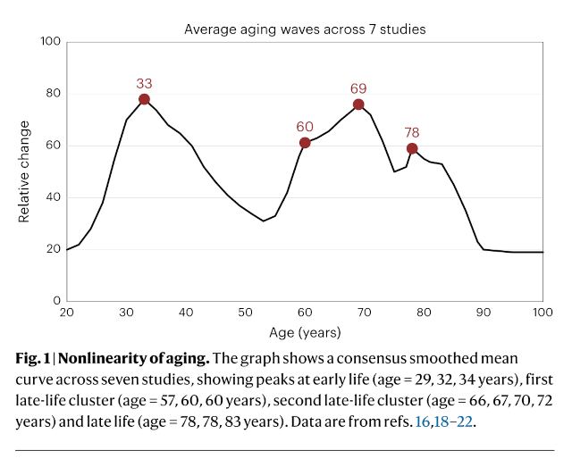
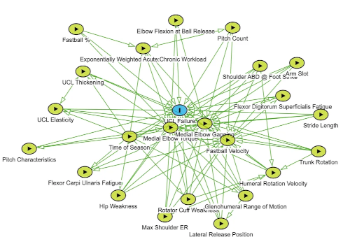

Clocks, Not Calendars, with Sensors
Eric Topol argues that medicine should put less emphasis on calendars and put more emphasis on clocks. Calendars are unreliable, he writes in his Substack (which summarizes in his recent technical review article in Nature Medicine). Different tissues age at different rates, with all the usual reasons why (genetics, environment, habits, etcetera).
The right thing to do for an individual with lower brain age, higher heart age, plus some extra wear and tear on other organs, according to Topol, is to take advantage of what’s good and compensate for what’s bad and monitor what else could go sideways.

Ultimately, age is not a progression. For a full-grown adult, it is a series of tissue-specific cascades. Topol has a graphic in the review paper showing how aging occurs in three major waves: early-30s, 60s, and right before the finish line (78 on average).
More evidence comes from a Nature paper by Urbut et al. where genetics and longitudinal EHR constitute a Bayesian predictive model for future disease trajectory. Genes are not destiny. That is known. But your health events and genes put your health on a trajectory, and now it can be modeled with increasing accuracy as you age.
Topol’s idea is relevant to athletes’ trajectories. The longer-term consequence is apparent. Football players (soccer players too) can experience dramatic declines in brain health, but that won’t be every single player, given all the different things that can happen before, during, and after playing careers.
Retired NFL players get free health screenings carried out by the Living Heart Foundation and supported by the NFL Players Association. Scott Perryman from Living Heart told the Atlanta Journal-Constitution that one reason for the screening is the higher risk for heart disease among larger-bodied people such as football players.
Justin Verlander is the oldest athlete in U.S. major professional sports at 43 years old. Though he’d hoped to last a few years longer, he now plans to retire. “I feel like I’ve been like plugging holes in a leaky boat,” he told Bob Nightengale of USA Today. “I know what I need to do mechanically to be healthy and compete at this level, but my body’s not letting me do that.”
Verlander badly wanted to win 300 games, but it looks like he will retire with 266. According to Nightengale, “he wonders if anyone will ever win 250 again.” A 2022 video analysis of Verlander’s 39-year-old, post-Tommy John, Cy Young-winning mechanics showed a pitcher who knew how to compensate for lack of mobility (2 previous core/groin surgeries) with efficiency and timing of hip rotation to generate power for 95-99 mph fastballs. He started to run out of runway then, and he is just about out of runway now.
Does a theory of clocks, not calendars, hold up for young athletes who have yet to hit that first aging wave?
Devin Gordon documented the injury-rehabilitate-reinjury cycle that affects more and more young athletes. Gordon writes in The New York Times Magazine that advances in biomechanics and sports science have raised the physical limits for what’s athletically possible, and then beyond it, to where something inevitably breaks. At that point surgical advances kick in, and today’s athletes are confident that “no matter what breaks, modern medicine can fix it.”
If the risk of major injury is pervasive in elite sport but the financial incentive makes the risk worthwhile, who describes the downside risk of the situation?
There is a proposal to calculate a fuller, life-long economic estimate for an athlete’s injury (called DASY, Disability-Adjusted Sporting Year). I have also heard analysts who would like to adopt an engineering risk perspective, similar to how experts might determine when a bridge can no longer support x-number of cars and needs to be retired and replaced.
The calendar in performance analysis is the aging curve, a fundamental aspect of lots of sports data analytics. DASY and engineering risk are approaches that can capture more complexity and utilize more of the facets that play roles in athlete injuries.

Lucas Seehafer drew up 400+ interactions that could play a role in a pitcher’s ulnar collateral ligament (UCL) tear at his Bluesky.
The bigger hope for progress probably isn’t the modeling. It’s the data. Biological sensing advances will change how we understand the working condition of brains and other organ tissues. Nature Sensors has a roundtable future of sensing conversation with a set of five sensing research experts.
They say that exciting times are close at hand. Progress toward sensors that also compute puts intelligence right there with the collected signals. The brain, body, and home will all have far greater sensor exposure.
One expert said that it will be possible to read cellular states for all manner of tissues, not just neurological bioelectrics, adding that it “is not merely a technical step but an ethical inflection.” The ability to know when a 22-year-old point guard has 37-year-old ankles might help some people, and those some people might not be the athlete.
Surveilling Data Workers
Nurses feel that one side effect of the data-rich triage work that their job requires has been workplace surveillance. According to Khari Johnson in an article at The Markup, Kaiser Permanente nurses do not like the AI systems that were put in place to help them and to help patients. It turns out that the systems help management to keep tabs on the nurses without really helping anyone else.
Nurses regularly decide to override the automated care recommendations. The automation is not just there to provide helpful information. It is also designed to reduce call times between nurses and patients.
Athletes will not be the only targets of data-enabled surveillance. Coaches, like medical caretakers, also need to understand their situation.
News
How Cycling Solved Sleep in Defector by Patrick Redford on July 14, 2026
Do you know your ‘sweat score’? The rise of hydration tech in BBC Technology by Chris Baraniuk on June 22, 2026
MLB cracks down on using AI via dugout iPads to help shape in-game decisions in The Athletic by Eno Sarris on July 16, 2026
This World Cup sealed it: Messi is the best male athlete of all time in ESPN.com by Ryan O’Hanlon on July 17, 2026
When you speak to someone about Chris Cenac Jr., two traits that those who know him rave about are his work ethic & determination in X/Twitter by Bobby Krivitsky on July 15, 2026
Study finds high school track experience gives baseball players an edge MLB teams overlook in University of Florida, UF News by Karen Dooley on July 16, 2026
Nature research paper: Food systems transformation would reshape global agriculture in Bluesky, Nature by Matthew Gibson et al on July 15, 2026
2026 Care of the Athletic Heart Take-Home Points in American College of Cardiology, Latest in Cardiology by Christopher Lee and Merije Chukumerije on July 14, 2026
Home is Where the Heart or ‘Love’ is in The Clemson Insider by Ashby Mixon on July 16, 2026
My financialtimes.com profile of Lamine Yamal in Bluesky, Financial Times by Simon Kuper on July 17, 2026
Could this machine change football training? (video, 3:55) in BBC by Paul Carter on July 17, 2026
Honored to be featured by Harvard Law School for an analysis of the Brendan Sorsby legal saga in Bluesky by Michael McCann on July 17, 2026